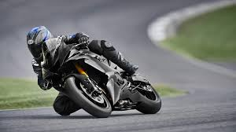

YAMAHA YZF-R6
La Yamaha YZF-R6 es una motocicleta deportiva que ha mantenido su reputación como una de las mejores en su clase durante más de dos décadas. Con su avanzada tecnología, impresionante rendimiento y diseño icónico, la R6 sigue siendo una elección favorita entre los entusiastas de las motos deportivas.

1. Historia y Evolución
La Yamaha YZF-R6, comúnmente conocida como Yamaha R6, es una motocicleta deportiva de alto rendimiento que ha sido un ícono en la categoría de 600 cc desde su introducción en 1999. Reconocida por su agilidad, potencia y diseño aerodinámico, la R6 ha sido una favorita tanto en la carretera como en la pista.
- 1999: Lanzamiento inicial, estableciendo nuevos estándares en la categoría de 600 cc con su motor de 120 CV.
- 2001: Introducción del sistema de inyección de combustible.
- 2003: Actualización significativa con un chasis Deltabox III y un aumento de potencia.
- 2006: Rediseño completo con un nuevo chasis, suspensión mejorada y tecnología de acelerador electrónico YCC-T.
- 2008: Introducción de la tecnología de válvulas variables (YCC-I).
- 2017: Última gran actualización, con mejoras en la aerodinámica, electrónica avanzada y un diseño más agresivo.
- 2020: Yamaha anuncia que la R6 será descontinuada como modelo de calle, pero continuará siendo producida para competiciones y como modelo R6 Race.
2. Especificaciones Técnicas
La Yamaha R6 está diseñada para ofrecer un rendimiento excepcional en la categoría de peso medio. Aquí están las especificaciones técnicas más recientes:
- Motor: 599 cc, cuatro cilindros en línea, DOHC, 16 válvulas, refrigerado por líquido.
- Potencia: Aproximadamente 118.4 CV a 14,500 RPM.
- Par Máximo: 61.7 Nm a 10,500 RPM.
- Transmisión: Caja de cambios de 6 velocidades.
- Chasis: Deltabox de aluminio.
- Suspensión Delantera: Horquilla invertida KYB de 43 mm, completamente ajustable.
- Suspensión Trasera: Amortiguador KYB, completamente ajustable.
- Frenos: Discos dobles delanteros de 320 mm con pinzas radiales de 4 pistones y un disco trasero de 220 mm.
- Peso: Aproximadamente 190 kg en orden de marcha.
- Altura del Asiento: 850 mm.
- Capacidad del Tanque: 17 litros.